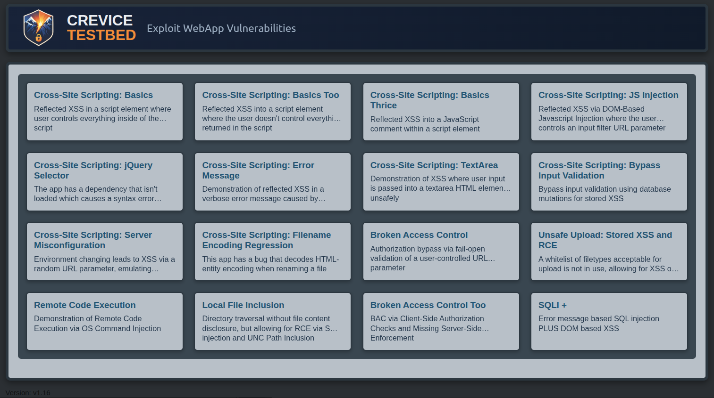

Crevice TestbedApplication Security Training Lab Vulnerable by Design

Overview
Crevice Testbed is an intentionally vulnerable web application I built to support application security training and research. The project serves two primary purposes: demonstrating real-world vulnerability patterns I have discovered during professional security assessments, and providing a practical environment for learning how to investigate those issues using standard testing tools and techniques.
Crevice Testbed is designed to encourage curiousity, recreating realistic vulnerability conditions in a controlled environment that can be safely studied and documented.
Motivation
During application security engagements I have frequently encountered vulnerability patterns that are difficult to discuss publicly due to disclosure constraints. Crevice Testbed allows me to safely recreate those behaviors without exposing vendor or customer systems. Each lab mirrors a vulnerability class I have personally encountered, enabling me to publish detailed technical writeups while still respecting responsible disclosure requirements.
The project is also motivated by a common skills gap observed during security testing. Modern scanners are powerful, but effective testing still requires manual investigation, browser tooling, and an understanding of how client-side logic interacts with server-side controls. Crevice Testbed provides guided labs that encourage testers to move beyond automated scanning and develop those investigative skills.
Training Focus
The labs emphasize practical testing workflows rather than puzzle-style exploitation. Modules are positioned loosely in order of least complexity to greatest.Testers are encouraged to inspect network traffic, review client-side JavaScript, use browser developer tools, and reason about how application behavior changes when inputs are modified. Many scenarios intentionally require these techniques in order to identify the underlying issue.
Each module focuses on a specific vulnerability class such as input validation flaws, access control weaknesses, or file handling mistakes. The goal is not simply to exploit the issue, but to demonstrate the investigative process that leads to discovering it.
Lab Design
Crevice Testbed modules are designed to replicate realistic conditions encountered in production applications. Instead of isolated challenges, each lab includes contextual behavior such as partial mitigations, misleading client-side controls, or error handling that obscures the underlying issue. These elements reflect the types of scenarios security testers encounter during real assessments.
The platform also serves as the foundation for many of the vulnerability writeups in this portfolio. By recreating real assessment findings in a controlled environment, I am able to document the discovery process, demonstrate exploitation techniques, and explain defensive lessons without exposing sensitive systems or proprietary code.